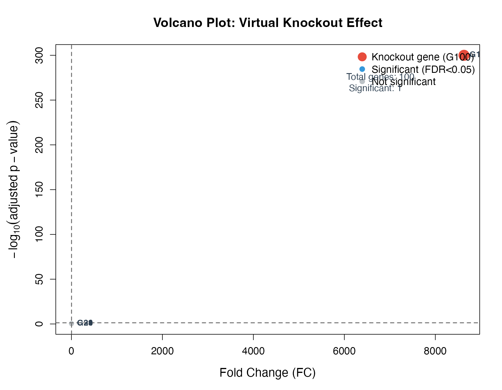
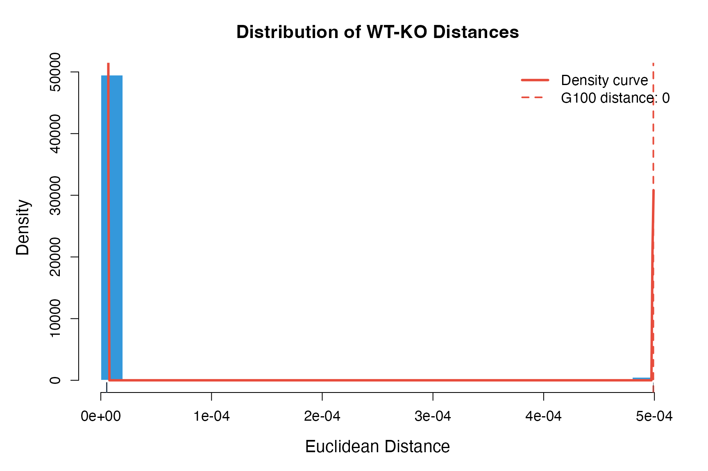
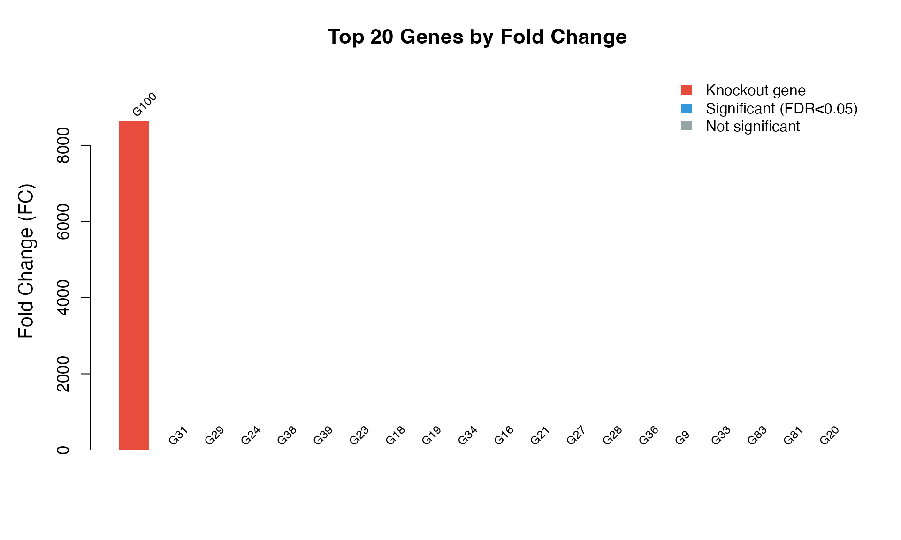
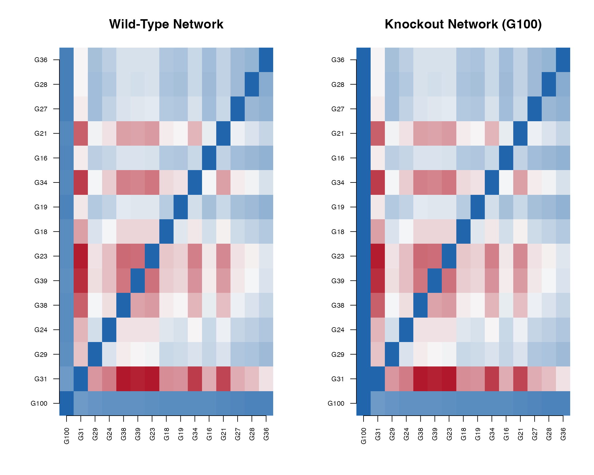
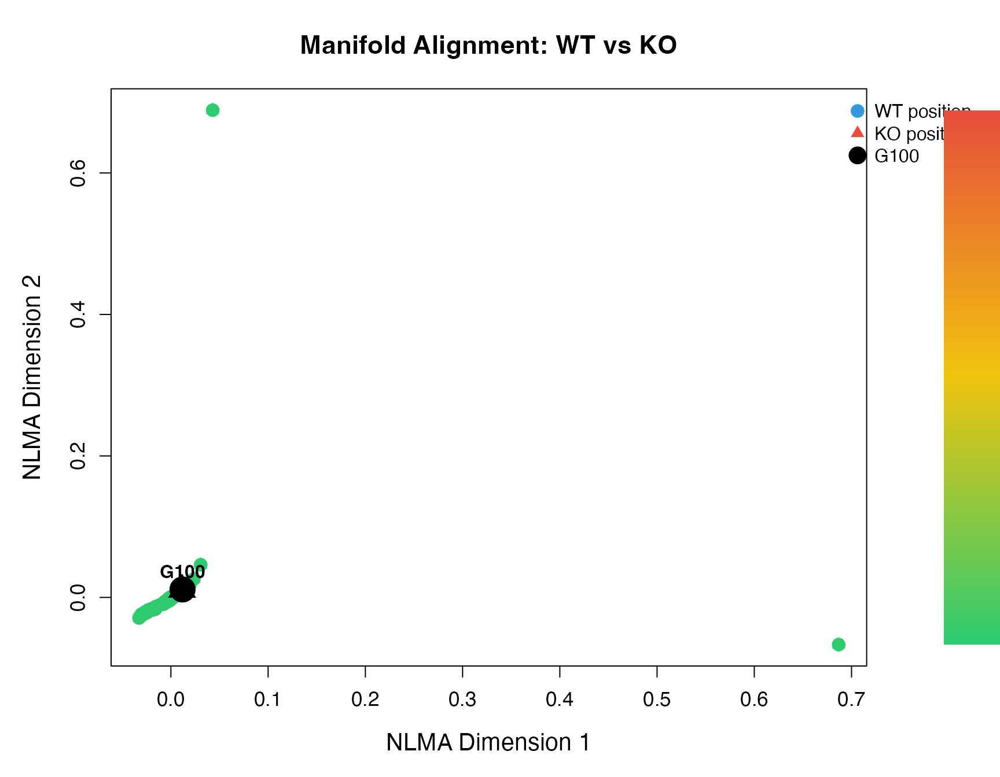
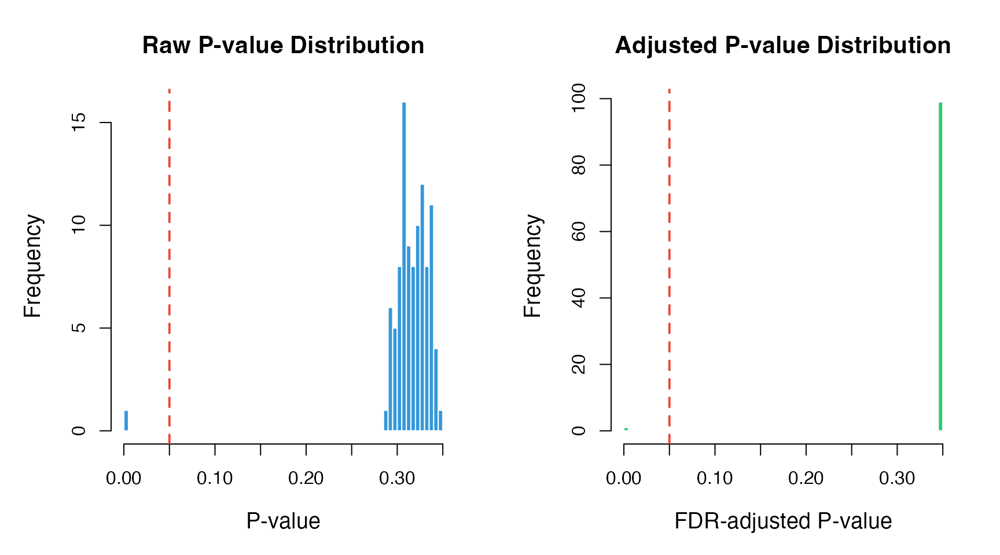

Introduction
This vignette demonstrates various visualization techniques for scTenifoldKnk results. All plots use base R graphics for maximum compatibility.
Run Analysis
library(scTenifoldKnk)
library(Matrix)
# Load and run analysis
data_path <- system.file("single-cell/example.csv", package = "scTenifoldKnk")
scRNAseq <- as.matrix(read.csv(data_path, row.names = 1))
result <- scTenifoldKnk(
countMatrix = scRNAseq,
gKO = "G100",
qc_minLSize = 0,
nc_nNet = 5,
nc_nCells = 100,
nc_nComp = 3,
td_K = 3,
verbose = FALSE
)1. Volcano Plot
The volcano plot shows fold change vs. statistical significance.
dr <- result$diffRegulation
dr$log10_padj <- -log10(dr$p.adj + 1e-300)
dr$significant <- dr$p.adj < 0.05
dr$is_ko <- dr$gene == "G100"
# Color scheme
colors <- ifelse(dr$is_ko, "#E74C3C",
ifelse(dr$significant, "#3498DB", "#BDC3C7"))
# Create plot
par(mar = c(5, 5, 4, 2))
plot(dr$FC, dr$log10_padj,
pch = 19,
col = colors,
cex = ifelse(dr$is_ko, 2.5, 1),
xlab = "Fold Change (FC)",
ylab = expression(-log[10](adjusted~p-value)),
main = "Volcano Plot: Virtual Knockout Effect",
cex.lab = 1.3,
cex.axis = 1.1,
cex.main = 1.4)
# Add threshold lines
abline(h = -log10(0.05), lty = 2, col = "gray40", lwd = 1.5)
abline(v = 2, lty = 2, col = "gray40", lwd = 1.5)
# Label top genes
top_genes <- head(dr[order(dr$p.adj), ], 5)
text(top_genes$FC, -log10(top_genes$p.adj + 1e-300),
labels = top_genes$gene,
pos = 4, cex = 0.9, col = "#2C3E50", font = 2)
# Legend
legend("topright",
legend = c("Knockout gene (G100)", "Significant (FDR<0.05)", "Not significant"),
col = c("#E74C3C", "#3498DB", "#BDC3C7"),
pch = 19,
pt.cex = c(2, 1.2, 1.2),
bty = "n",
cex = 1.1)
# Add annotation box
text(max(dr$FC) * 0.7, max(dr$log10_padj) * 0.9,
paste("Total genes:", nrow(dr), "\n",
"Significant:", sum(dr$significant)),
adj = 0, cex = 1, col = "#2C3E50")
2. Distance Distribution Plot
Visualize the distribution of WT-KO distances.
par(mar = c(5, 5, 4, 2))
# Histogram with density
hist(dr$distance, breaks = 30,
col = "#3498DB", border = "white",
probability = TRUE,
main = "Distribution of WT-KO Distances",
xlab = "Euclidean Distance",
ylab = "Density",
cex.lab = 1.3,
cex.axis = 1.1,
cex.main = 1.4)
# Add density curve
dens <- density(dr$distance)
lines(dens, col = "#E74C3C", lwd = 3)
# Mark knockout gene
ko_dist <- dr$distance[dr$gene == "G100"]
abline(v = ko_dist, col = "#E74C3C", lwd = 2, lty = 2)
# Add rug plot
rug(dr$distance, col = "#2C3E50", lwd = 0.5)
# Legend
legend("topright",
legend = c("Density curve", paste("G100 distance:", round(ko_dist, 3))),
col = c("#E74C3C", "#E74C3C"),
lty = c(1, 2),
lwd = c(3, 2),
bty = "n",
cex = 1.1)
3. Ranking Plot
Show gene rankings by fold change or p-value.
# Sort by FC
dr_sorted <- dr[order(dr$FC, decreasing = TRUE), ]
dr_sorted$rank <- 1:nrow(dr_sorted)
par(mar = c(5, 5, 4, 2))
# Create barplot for top genes
top_n <- 20
top_data <- dr_sorted[1:top_n, ]
# Colors based on significance
bar_colors <- ifelse(top_data$gene == "G100", "#E74C3C",
ifelse(top_data$p.adj < 0.05, "#3498DB", "#95A5A6"))
bp <- barplot(top_data$FC,
col = bar_colors,
border = NA,
main = paste("Top", top_n, "Genes by Fold Change"),
ylab = "Fold Change (FC)",
cex.lab = 1.3,
cex.axis = 1.1,
cex.main = 1.4,
ylim = c(0, max(top_data$FC) * 1.15))
# Add gene labels
text(bp, top_data$FC + max(top_data$FC) * 0.02,
labels = top_data$gene,
srt = 45, adj = 0, cex = 0.8, xpd = TRUE)
# Legend
legend("topright",
legend = c("Knockout gene", "Significant (FDR<0.05)", "Not significant"),
fill = c("#E74C3C", "#3498DB", "#95A5A6"),
border = NA,
bty = "n",
cex = 1)
4. Network Heatmap
Visualize the gene regulatory network.
# Get networks
WT_net <- as.matrix(result$tensorNetworks$WT)
KO_net <- as.matrix(result$tensorNetworks$KO)
# Select top affected genes for visualization
top_genes <- head(dr[order(dr$FC, decreasing = TRUE), "gene"], 15)
WT_sub <- WT_net[top_genes, top_genes]
KO_sub <- KO_net[top_genes, top_genes]
# Create color palette
n_colors <- 100
color_palette <- colorRampPalette(c("#2166AC", "#F7F7F7", "#B2182B"))(n_colors)
# Set up layout
par(mfrow = c(1, 2), mar = c(5, 5, 4, 2))
# WT Network
image(1:nrow(WT_sub), 1:ncol(WT_sub), WT_sub,
col = color_palette,
xlab = "", ylab = "",
main = "Wild-Type Network",
axes = FALSE,
cex.main = 1.3)
axis(1, at = 1:nrow(WT_sub), labels = rownames(WT_sub), las = 2, cex.axis = 0.7)
axis(2, at = 1:ncol(WT_sub), labels = colnames(WT_sub), las = 2, cex.axis = 0.7)
# KO Network
image(1:nrow(KO_sub), 1:ncol(KO_sub), KO_sub,
col = color_palette,
xlab = "", ylab = "",
main = "Knockout Network (G100)",
axes = FALSE,
cex.main = 1.3)
axis(1, at = 1:nrow(KO_sub), labels = rownames(KO_sub), las = 2, cex.axis = 0.7)
axis(2, at = 1:ncol(KO_sub), labels = colnames(KO_sub), las = 2, cex.axis = 0.7)
5. Manifold Alignment Plot
Visualize the low-dimensional embedding.
# Get manifold alignment
MA <- result$manifoldAlignment
n_genes <- nrow(MA) / 2
# Extract embeddings
WT_embed <- MA[1:n_genes, ]
KO_embed <- MA[(n_genes+1):(2*n_genes), ]
# Get gene names
gene_names <- gsub("^X_", "", rownames(MA)[1:n_genes])
# Compute distances for coloring
distances <- sqrt(rowSums((WT_embed - KO_embed)^2))
# Create color gradient based on distance
color_gradient <- colorRampPalette(c("#2ECC71", "#F1C40F", "#E74C3C"))(100)
dist_normalized <- (distances - min(distances)) / (max(distances) - min(distances))
point_colors <- color_gradient[ceiling(dist_normalized * 99) + 1]
par(mar = c(5, 5, 4, 6))
# Plot WT points
plot(WT_embed[, 1], WT_embed[, 2],
pch = 19, col = point_colors, cex = 1.5,
xlab = "NLMA Dimension 1",
ylab = "NLMA Dimension 2",
main = "Manifold Alignment: WT vs KO",
cex.lab = 1.3,
cex.axis = 1.1,
cex.main = 1.4)
# Plot KO points
points(KO_embed[, 1], KO_embed[, 2],
pch = 17, col = point_colors, cex = 1.2)
# Draw lines connecting WT-KO pairs for top genes
top_idx <- order(distances, decreasing = TRUE)[1:10]
for (i in top_idx) {
lines(c(WT_embed[i, 1], KO_embed[i, 1]),
c(WT_embed[i, 2], KO_embed[i, 2]),
col = adjustcolor(point_colors[i], alpha.f = 0.7), lwd = 2)
}
# Label knockout gene
ko_idx <- which(gene_names == "G100")
if (length(ko_idx) > 0) {
points(WT_embed[ko_idx, 1], WT_embed[ko_idx, 2],
pch = 19, col = "black", cex = 3)
points(KO_embed[ko_idx, 1], KO_embed[ko_idx, 2],
pch = 17, col = "black", cex = 2.5)
text(WT_embed[ko_idx, 1], WT_embed[ko_idx, 2],
"G100", pos = 3, cex = 1, font = 2)
}
# Add legend
legend("topright",
legend = c("WT position", "KO position", "G100"),
pch = c(19, 17, 19),
col = c("#3498DB", "#E74C3C", "black"),
pt.cex = c(1.5, 1.2, 2),
bty = "n",
cex = 1,
inset = c(-0.15, 0),
xpd = TRUE)
# Add color bar
par(xpd = TRUE)
color_bar_x <- max(WT_embed[, 1]) + diff(range(WT_embed[, 1])) * 0.15
color_bar_y <- seq(min(WT_embed[, 2]), max(WT_embed[, 2]), length.out = 100)
for (i in 1:99) {
rect(color_bar_x, color_bar_y[i], color_bar_x + 0.3, color_bar_y[i+1],
col = color_gradient[i], border = NA)
}
text(color_bar_x + 0.4, min(color_bar_y), round(min(distances), 2), cex = 0.8, adj = 0)
text(color_bar_x + 0.4, max(color_bar_y), round(max(distances), 2), cex = 0.8, adj = 0)
text(color_bar_x + 0.15, max(color_bar_y) + diff(range(color_bar_y)) * 0.1,
"Distance", cex = 0.9, font = 2)
6. P-value Distribution
Check the distribution of p-values.
par(mfrow = c(1, 2), mar = c(5, 5, 4, 2))
# Raw p-values
hist(dr$p.value, breaks = 50,
col = "#3498DB", border = "white",
main = "Raw P-value Distribution",
xlab = "P-value",
ylab = "Frequency",
cex.lab = 1.2,
cex.main = 1.3)
abline(v = 0.05, col = "#E74C3C", lwd = 2, lty = 2)
# Adjusted p-values
hist(dr$p.adj, breaks = 50,
col = "#2ECC71", border = "white",
main = "Adjusted P-value Distribution",
xlab = "FDR-adjusted P-value",
ylab = "Frequency",
cex.lab = 1.2,
cex.main = 1.3)
abline(v = 0.05, col = "#E74C3C", lwd = 2, lty = 2)
7. Summary Statistics Table
# Create summary
summary_stats <- data.frame(
Metric = c("Total genes",
"Significant genes (FDR<0.05)",
"Significant genes (FDR<0.01)",
"Mean FC (all genes)",
"Max FC",
"Knockout gene rank",
"Knockout gene FC",
"Knockout gene p.adj"),
Value = c(nrow(dr),
sum(dr$p.adj < 0.05),
sum(dr$p.adj < 0.01),
round(mean(dr$FC), 3),
round(max(dr$FC), 3),
which(dr$gene == "G100"),
round(dr$FC[dr$gene == "G100"], 3),
formatC(dr$p.adj[dr$gene == "G100"], format = "e", digits = 2))
)
knitr::kable(summary_stats,
caption = "Summary Statistics",
align = c("l", "r"))| Metric | Value |
|---|---|
| Total genes | 100 |
| Significant genes (FDR<0.05) | 1 |
| Significant genes (FDR<0.01) | 1 |
| Mean FC (all genes) | 87.289 |
| Max FC | 8629.867 |
| Knockout gene rank | 1 |
| Knockout gene FC | 8629.867 |
| Knockout gene p.adj | 0.00e+00 |
Session Info
sessionInfo()
#> R version 4.4.0 (2024-04-24)
#> Platform: aarch64-apple-darwin20
#> Running under: macOS 15.6.1
#>
#> Matrix products: default
#> BLAS: /Library/Frameworks/R.framework/Versions/4.4-arm64/Resources/lib/libRblas.0.dylib
#> LAPACK: /Library/Frameworks/R.framework/Versions/4.4-arm64/Resources/lib/libRlapack.dylib; LAPACK version 3.12.0
#>
#> locale:
#> [1] C
#>
#> time zone: Asia/Shanghai
#> tzcode source: internal
#>
#> attached base packages:
#> [1] stats graphics grDevices utils datasets methods base
#>
#> other attached packages:
#> [1] Matrix_1.7-4 scTenifoldKnk_2.1.0
#>
#> loaded via a namespace (and not attached):
#> [1] cli_3.6.5 knitr_1.51 rlang_1.1.7 xfun_0.56
#> [5] otel_0.2.0 textshaping_1.0.4 jsonlite_2.0.0 htmltools_0.5.9
#> [9] ragg_1.5.0 sass_0.4.10 rmarkdown_2.30 grid_4.4.0
#> [13] evaluate_1.0.5 jquerylib_0.1.4 MASS_7.3-65 fastmap_1.2.0
#> [17] yaml_2.3.12 lifecycle_1.0.5 compiler_4.4.0 RSpectra_0.16-2
#> [21] fs_1.6.6 htmlwidgets_1.6.4 Rcpp_1.1.1 lattice_0.22-7
#> [25] systemfonts_1.3.1 digest_0.6.39 R6_2.6.1 parallel_4.4.0
#> [29] bslib_0.9.0 tools_4.4.0 pkgdown_2.1.3 cachem_1.1.0
#> [33] desc_1.4.3